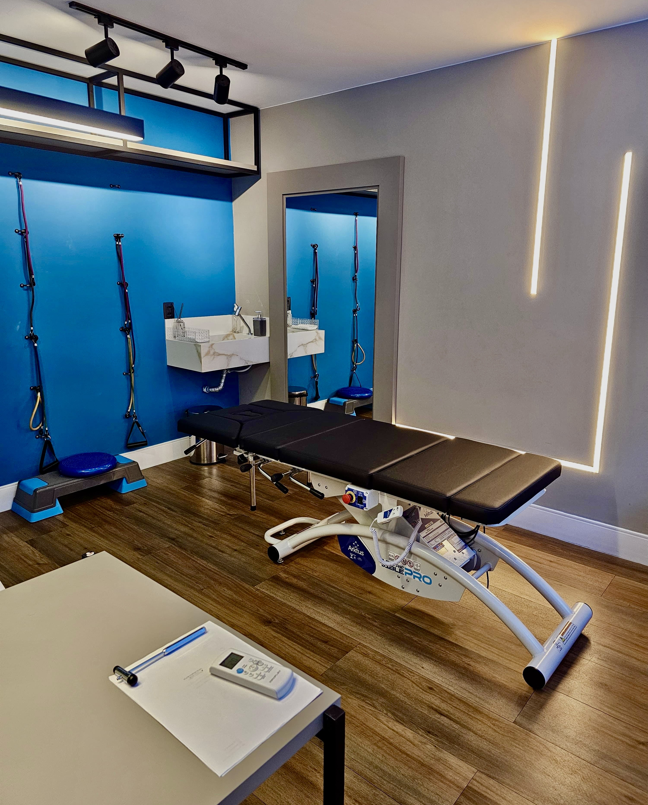
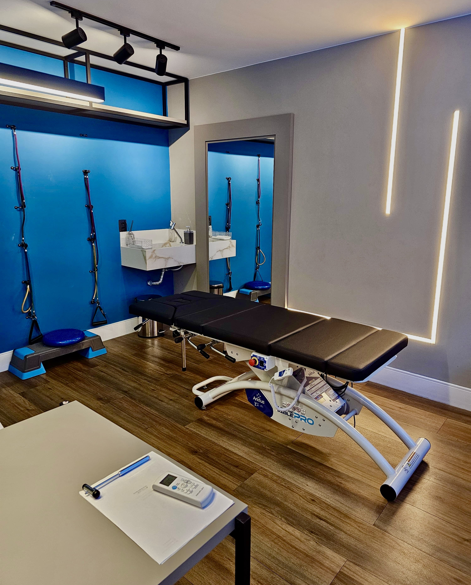

Sobre Nós
Na Clínica Vértice, nossa missão é proporcionar um atendimento de excelência em fisioterapia, focando na recuperação e bem-estar dos nossos pacientes. Com uma equipe de profissionais altamente qualificados e uma abordagem centrada no paciente, oferecemos tratamentos personalizados que visam não apenas a cura, mas também a prevenção de lesões e a promoção da saúde.
Nosso espaço foi projetado para oferecer conforto e tranquilidade, com equipamentos modernos e tecnologia de ponta para garantir os melhores resultados. Estamos comprometidos com a educação contínua e a atualização constante, sempre buscando as melhores práticas e inovações na área da fisioterapia.
Seja você um atleta profissional, um paciente em reabilitação ou alguém buscando melhorar sua qualidade de vida, estamos aqui para ajudar. Na Clínica Vértice, acreditamos que cada paciente é único e merece um tratamento individualizado, respeitando suas necessidades e objetivos.
Venha nos conhecer e descubra como podemos ajudar você a alcançar seus objetivos de saúde e bem-estar.
Nossos diferenciais
- Mais de 10 anos de experiência
- Atendimento personalizado
- Equipe multidisciplinar
- Tratamentos baseados em evidências científicas
- Ambiente acolhedor e moderno
Nosso Espaço
Conheça nosso espaço projetado para proporcionar conforto e bem-estar durante o seu tratamento. Contamos com salas equipadas com tecnologia de ponta, áreas de espera aconchegantes e um ambiente acolhedor que favorece a recuperação.

 

Nosso espaço é projetado para atender às necessidades de todos os nossos pacientes, oferecendo um ambiente seguro e confortável. Cada detalhe foi pensado para garantir a melhor experiência possível durante o seu tratamento.
Venha nos visitar e conhecer de perto as instalações da Clínica Vértice. Estamos localizados no coração da cidade, com fácil acesso e estacionamento disponível.
Nossos serviços
Fisioterapia Especializada em Dor
Tratamos condições de dores agudas e crônicas com uma abordagem que combina ciência sólida, escuta ativa e técnicas avançadas para resultados reais e duradouros.
- Dores na coluna (lombar, torácica e cervical)
- Dor ciática e hérnia de disco
- Tendinopatias
- Fibromialgia
- Outras condições musculo-esqueléticas
Pré e Pós-operatórios Traumato-Ortopédicos
Acelere sua recuperação e prepare-se para procedimentos com segurança e eficácia. Nosso cuidado especializado potencializa seus resultados cirúrgicos.
- Fraturas
- Artroplasias de Joelho e Quadril
- Reconstrução do LCA (Ligamento Cruzado Anterior)
- Recuperação de atroscopias e outras cirurgias traumato-ortopédicas
Fisioterapia Esportiva
Reabilitamos, previnimos lesões e otimizamos.
Nossos Profissionais

Dr. Pedro Castro
Com mais de 12 anos de experiência na área de fisioterapia, Dr. Pedro Castro é formado pela Universidade Federal de Pernambuco e possui mestrado em Reabilitação Neuromuscular pela USP. Ao longo de sua carreira, especializou-se em fisioterapia ortopédica e esportiva, atuando tanto em clínicas quanto em hospitais de referência. Pedro é reconhecido por sua abordagem humanizada e pelo desenvolvimento de protocolos personalizados para reabilitação de lesões musculoesqueléticas, sempre priorizando a qualidade de vida e a autonomia dos pacientes. Participa ativamente de congressos nacionais e internacionais, além de ministrar cursos e palestras sobre prevenção de lesões e promoção da saúde física. Sua dedicação e constante atualização fazem dele uma referência no tratamento de atletas amadores e profissionais.
Dr. Yves Oliveira
Graduado em Fisioterapia pela Universidade Católica de Brasília, Dr. Yves Oliveira possui pós-graduação em Fisioterapia Respiratória e Terapia Intensiva. Com mais de uma década de atuação, trabalhou em grandes centros hospitalares, onde se destacou no atendimento a pacientes em reabilitação pós-cirúrgica e portadores de doenças respiratórias crônicas. Yves é conhecido por sua habilidade em integrar técnicas modernas de fisioterapia respiratória com métodos tradicionais, proporcionando resultados expressivos na recuperação funcional dos pacientes. Além da prática clínica, dedica-se à pesquisa científica e à publicação de artigos em revistas especializadas, contribuindo para o avanço da fisioterapia no Brasil. Seu compromisso com a excelência e o bem-estar dos pacientes é reconhecido por colegas e pacientes.

Dra. Luísa Braga
Especialista em fisioterapia pediátrica, Dra. Luísa Braga é formada pela Universidade Estadual de Campinas e possui ampla experiência no acompanhamento de crianças com necessidades especiais. Ao longo de sua trajetória, atuou em instituições renomadas, desenvolvendo programas de intervenção precoce para bebês prematuros e crianças com distúrbios do desenvolvimento motor. Luísa é apaixonada pelo que faz e acredita no poder transformador da fisioterapia para promover autonomia e inclusão. Participa de projetos sociais voltados à orientação de famílias e capacitação de profissionais da saúde, além de ser autora de capítulos em livros sobre fisioterapia infantil. Sua sensibilidade, aliada ao conhecimento técnico, faz dela uma profissional admirada por pais, colegas e pacientes.
Entre em contato
Estamos aqui para ajudar você a alcançar seus objetivos de saúde e bem-estar. Entre em contato conosco para agendar uma consulta ou obter mais informações sobre nossos serviços.